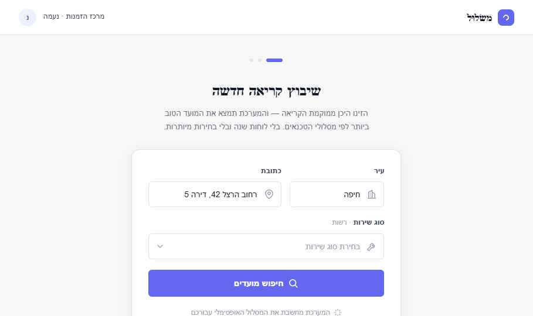
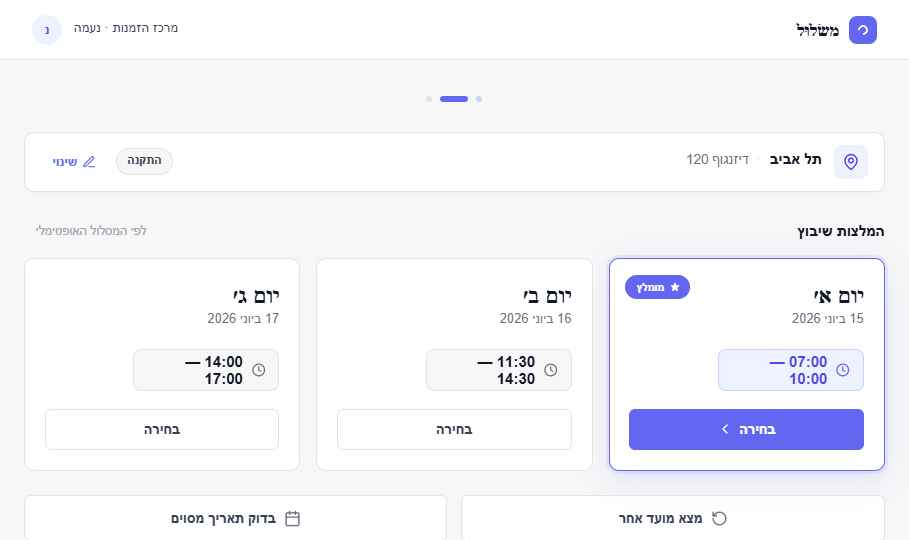
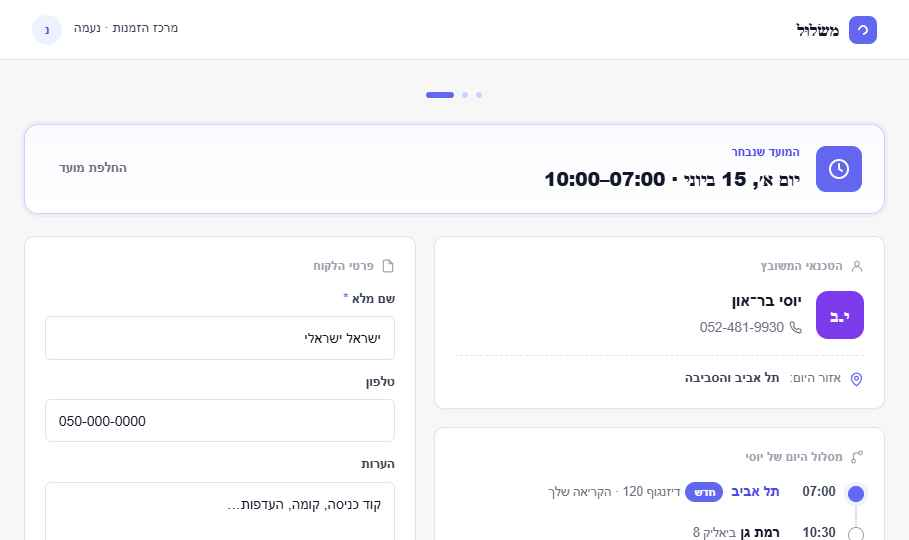
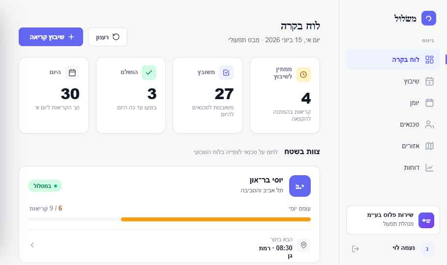
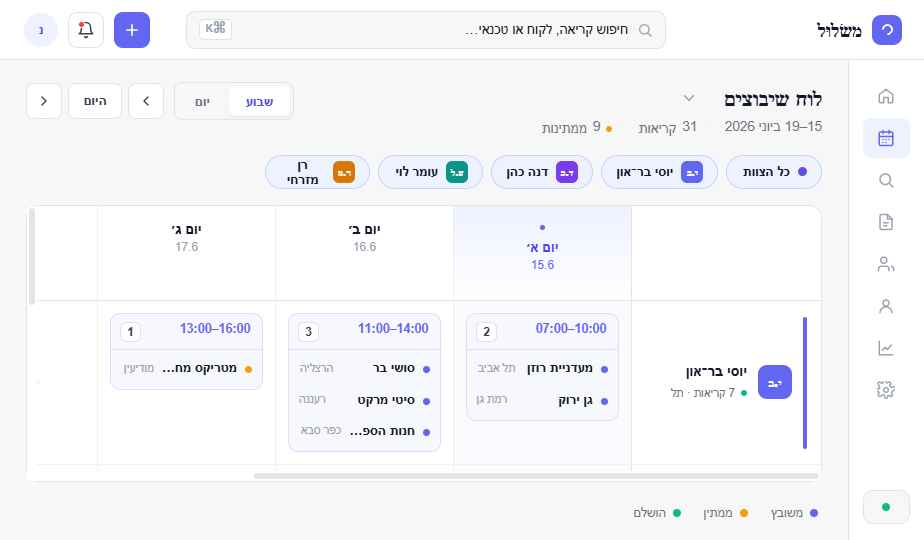
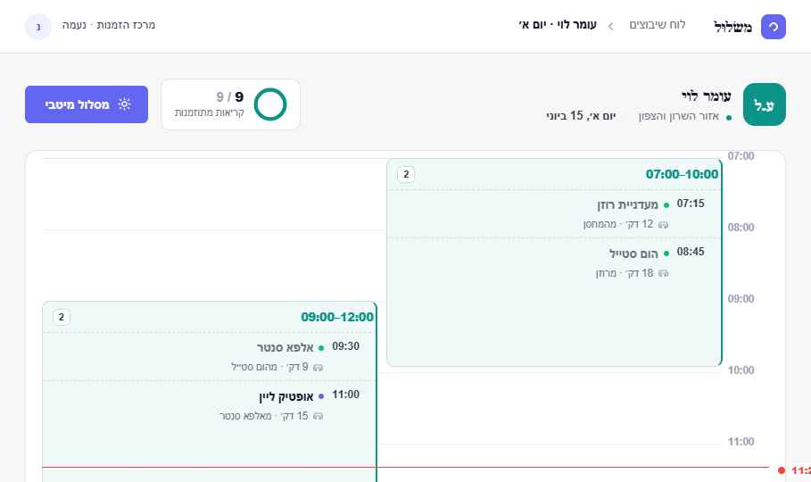

01
תהליך השיבוץ
זרימת מתאם — מחיפוש ועד אישור
פתיחהשלב 1 · חיפוש
כרטיס חיפוש ממורכז — עיר, כתובת וסוג שירות. נקודת ההתחלה.
Step 1 — Search.html
פתיחהשלב 2 · המלצות
שלושה מועדים מומלצים, הטוב ביותר ראשון — ללא פרטי טכנאי.
Step 2 — Recommendations.html
פתיחהשלב 3 · חשיפה ואישור
הטכנאי, מסלול היום, טופס הלקוח ואישור השיבוץ.
Step 3 — Reveal & Confirm.html
02
תפעול ולוחות
תצוגות מנהל ותפעול יומי
פתיחהלוח בקרה
קוקפיט מבוסס־טכנאים: רצועת KPI, עומס לכל טכנאי ולוח שבועי נשלף.
Home Dashboard.html
פתיחהלוח שיבוצים
מטריצת טכנאים × ימים עם חלוני זמן מקובצים, תצוגת שבוע/יום ופאנל פרטים.
Dispatch Board.html
פתיחהמסלול יומי
רשת זמן אנכית לטכנאי בודד — חלונות חופפים בעמודות ומגש גרירה.
Daily Route Grid.html
03
ניווט ותבניות
מעטפת האפליקציה ורכיבים
—